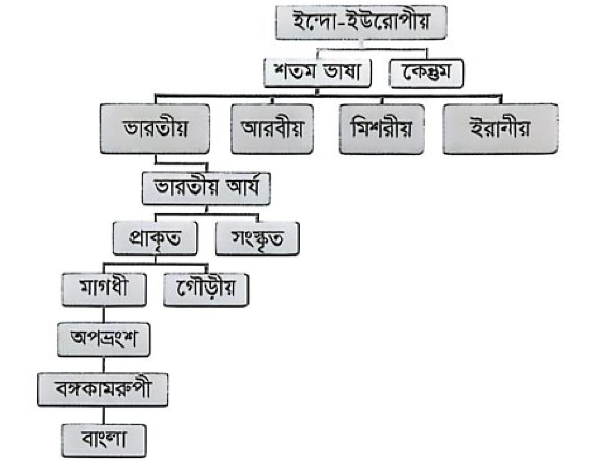

চর্যাপদ (কাহ্নপা), মধ্যযুগ ও আধুনিক যুগ, সাম্যবাদী কাব্যগ্রন্থ, মুক্তিযুদ্ধভিত্তিক উপন্যাস, খাঁটি দেশি শব্দ, নঞ তৎপুরুষ সমাস, মৌলিক স্বরধ্বনি
English Language & Literature
২০
Parts of speech, idioms & phrases (In black and white, An apple of discord), verb identification, tense rules (after/before), subject-verb agreement
সাধারণ জ্ঞান (বাংলাদেশ ও আন্তর্জাতিক)
২০
বীরশ্রেষ্ঠ, আয়তনে বৃহত্তম জেলা (রাঙ্গামাটি), প্রথম মোবাইল ব্যাংকিং ও ভূ-উপগ্রহ কেন্দ্র, ইউরোপীয় ইউনিয়ন (২৭), ম্যানিলা আইআরআরআই, জাতিসংঘ ১৯৪৫, বিমসটেক চেয়ারম্যান
সাধারণ ও উচ্চতর গণিত
২০
পোলার স্থানাঙ্ক, দ্বিঘাত সমীকরণ, বিন্যাস-সমাবেশ, স্পর্শকের ঢাল, ত্রিকোণমিতি, গাছের উচ্চতা জ্যামিতি, ক্যালকুলাস (অন্তরীকরণ ও সমাকলন)
📝 প্রথম অংশ: প্রামাণ্য ইন্টারেক্টিভ রিভিশন নোট ও সূত্রাবলি
📖 ১. বাংলা সাহিত্য ও ব্যাকরণ সূত্রকোষ
চর্যাপদ ও আদি-মধ্যযুগ: চর্যাপদের সর্বাধিক পদ রচয়িতা হলেন কাহ্নপা (তিনি ১৩টি পদ রচনা করেন, যার মধ্যে ১২টি অক্ষত অবস্থায় আবিষ্কৃত হয়েছে)। চর্যাপদের পদকর্তাদের মধ্যে কুক্কুরীপা একমাত্র নারী পদকর্তা হিসেবে অনুমিত।
বাংলা ভাষার উৎপত্তি ও বংশলতিকা (Linguistic Evolution):
ড. সুনীতিকুমার চট্টোপাধ্যায়ের মতে, ইন্দো-ইউরোপীয় মূল ভাষা ➔ শততম শাখা ➔ আর্য ভাষা ➔ ভারতীয় আর্য ➔ প্রাচ্য প্রাকৃত ➔ মাগধী প্রাকৃত ➔ মাগধী অপভ্রংশ ➔ বঙ্গকামরূপী শাখা থেকে উৎপত্তি লাভ করেছে বাংলা, অসমীয়া ও ওড়িয়া ভাষা।
সাহিত্যিক / কবি
ছদ্মনাম / উপাধি
কালজয়ী সাহিত্যকর্ম ও চরিত্র
বলাইচাঁদ মুখোপাধ্যায়
বনফুল
বিন্দু বিসর্গ, ডানা, স্থাবর (ছোটগল্পের জাদুকর)
মুন্সী আবদুল করিম
সাহিত্যবিশারদ
প্রাচীন ও মধ্যযুগীয় বাংলা সাহিত্যের পুঁথি সংগ্রাহক ও গবেষক
কাজী নজরুল ইসলাম
বিদ্রোহী কবি
'নারী' কবিতাটি ১৯২৫ সালে প্রকাশিত 'সাম্যবাদী' কাব্যগ্রন্থের অন্তর্ভুক্ত
শওকত ওসমান
—
'জাহান্নাম হইতে বিদায়' (১৯৭১) মুক্তিযুদ্ধভিত্তিক কালজয়ী উপন্যাস
শব্দার্থ ও বাগধারা: 'দ্যুলোক' শব্দের অর্থ আকাশ/স্বর্গ (দিব্ + লোক); 'তামার বিষ' বাগধারার অর্থ অর্থের কুপ্রভাব বা অর্থের অহংকার।
🇬🇧 ২. English Grammar, Usage & Idiom Master Notes
Idiom / Phrase
Meaning (English)
বাংলা অর্থ ও ব্যবহার
In black and white
In writing / in print
লিখিতভাবে (Please submit your complaint in black and white)
An apple of discord
Subject of dispute / bone of contention
বিবাদের মূল কারণ (The ancestral land became an apple of discord)
Right the wrong
To correct an injustice (Verb)
ভুল সংশোধন করা বা অন্যায়ের প্রতিকার করা ('Right' এখানে Verb)
Benevolent
Kind, generous, compassionate
দয়ালু, পরোপকারী ও হিতৈষী (Synonym: Kind)
Key Grammatical Rules for Competitive Exams:
After vs. Before Tense Sequence:
Past Indefinite + after + Past Perfect ➔ "I came home after the rain had stopped."
Past Perfect + before + Past Indefinite ➔ "The train had left before I reached the station."
Subject-Verb Agreement with 'The number of':
The number of + Plural Noun + Singular Verb (e.g., "The number of applicants has increased")। পক্ষান্তরে A number of + Plural Noun + Plural Verb (e.g., "A number of applicants have applied")।
Gerund as Subject: Gerund বা Gerund phrase বাক্যের সাবজেক্ট হলে Verb সর্বদা Singular হয় (e.g., "Telling lies is a great sin")।
Preposition Usage:Consist of = গঠিত হওয়া (The committee consists of seven members)।
Spelling Trap:Commission বানান: C-O-M-M-I-S-S-I-O-N (ডাবল m এবং ডাবল s)।
📐 ৩. গণিত ও উচ্চতর গণিত সূত্রকোষ (Mathematical Formulae)
ই-মেইল প্রবর্তক: রে টমলিনসন (Ray Tomlinson, ১৯৭১ সালে @ চিহ্নের ব্যবহার শুরু করেন)।
WWW এর জনক: স্যার টিম বার্নার্স-লি (Tim Berners-Lee, ১৯৮৯)।
ব্লুটুথ ও পিকোনেট: ব্লুটুথ ডিভাইসগুলো নিজেদের মধ্যে যুক্ত হয়ে যে ক্ষুদ্র নেটওয়ার্ক গঠন করে তাকে পিকোনেট (Piconet) বলে। IEEE 802.15.1 স্ট্যান্ডার্ড।
ওয়াইম্যাক্স (WiMAX): Worldwide Interoperability for Microwave Access, এটি ব্রডব্যান্ড ওয়্যারলেস মেট্রোপলিটন এরিয়া নেটওয়ার্ক (IEEE 802.16)।
উভয়মুখী ডিভাইস: টাচস্ক্রিন (Touch Screen) একই সাথে ইনপুট ও আউটপুট হিসেবে কাজ করে।
🌏 ৫. বাংলাদেশ ও আন্তর্জাতিক বিষয়াবলি প্রামাণ্য টাইমলাইন
সাল / তারিখ
ঐতিহাসিক ঘটনা ও প্রামাণ্য তথ্য
১৯৭১
মুক্তিযুদ্ধে সর্বোচ্চ বীরত্বসূচক খেতাব 'বীরশ্রেষ্ঠ' লাভ করেন ৭ জন বীর মুক্তিযোদ্ধা
১৯৪৫ (২৪ অক্টোবর)
জাতিসংঘ (UN) প্রতিষ্ঠিত হয়। বর্তমান মহাসচিব আন্তোনিও গুতেরেস (পর্তুগাল)
১৯৬০
ফিলিপাইনের ম্যানিলায় আন্তর্জাতিক ধান গবেষণা ইনস্টিটিউট (IRRI) প্রতিষ্ঠিত হয়
১৯৭৫ (১৪ জুন)
বঙ্গবন্ধু শেখ মুজিবুর রহমান রাঙ্গামাটির বেতবুনিয়ায় দেশের প্রথম ভূ-উপগ্রহ কেন্দ্র উদ্বোধন করেন
২০১১
ডাচ্-বাংলা ব্যাংক বাংলাদেশে প্রথম মোবাইল ফিন্যান্সিয়াল সার্ভিস (মোবাইল ব্যাংকিং) চালু করে
বর্তমান তথ্য
ইউরোপীয় ইউনিয়নের (EU) বর্তমান সদস্য রাষ্ট্র সংখ্যা ২৭টি (যুক্তরাজ্যের প্রস্থানের পর)
বর্তমান তথ্য
বিমসটেক (BIMSTEC)-এর বর্তমান চেয়ারম্যান বাংলাদেশের প্রধান উপদেষ্টা নোবেলজয়ী ড. মুহাম্মদ ইউনূস
ভৌগোলিক তথ্য
আয়তনে বাংলাদেশের বৃহত্তম জেলা রাঙ্গামাটি (৬,১১৮.১৩ বর্গকিলোমিটার)
📊 প্রামাণ্য কুইজ স্কোর: ০ / ১০০
বাংলাপ্রশ্ন ১
কাজী নজরুল ইসলামের ‘নারী’ কবিতাটি কোন কাব্যগ্রন্থের অন্তর্গত?
সঠিক উত্তর: সাম্যবাদী
ব্যাখ্যা: ‘সাম্যবাদী’ কাজী নজরুল ইসলাম রচিত ১৯২৫ সালের ডিসেম্বর (পৌষ, ১৩৩২) প্রকাশিত একটি কাব্যগ্রন্থ। বইটিতে মোট ১১টি কবিতা রয়েছে। এগুলো হলো: ‘সাম্যবাদী’, ‘সাম্য’, ‘ঈশ্বর’, ‘মানুষ’, ‘পাপ’, ‘চোর-ডাকাত’, ‘বীরাঙ্গনা’, ‘মিথ্যাবাদী’, ‘নারী’, ‘রাজা-প্রজা’, ‘কুলি-মজুর’।
Englishপ্রশ্ন ২
Choose the correct option: ‘I came home after the rain _____’
সঠিক উত্তর: had stopped
ব্যাখ্যা: বাক্যের দুটি অংশ after দ্বারা যুক্ত হলে after এর পরে Past perfect tense হয় এবং অন্যটিতে Simple Past হয়।
সাধারণ বিজ্ঞানপ্রশ্ন ৩
লেন্সের আলোক কেন্দ্রের মধ্য দিয়ে কোনো রশ্মি প্রবেশ করলে এটির কি হবে?
সঠিক উত্তর: রশ্মিটি বিচ্যুতি হবে না
ব্যাখ্যা: লেন্সের এক পৃষ্ঠে আপতিত আলোক রশ্মি অন্য পৃষ্ঠ দিয়ে নির্গত হওয়ার সময় যদি আপতিত রশ্মির সমান্তরাল ভাবে নির্গত হয় বা দিক পরিবর্তন না করে তা হলে ঐ রশ্মি লেন্সের প্রধান অক্ষের যে বিন্দু দিয়ে যায় বা যে বিন্দুতে ছেদ করে তাকে ঐ লেন্সের আলোক কেন্দ্র বলে।
ব্যাখ্যা: LASER (Light Amplification by Stimulated Emission of Radiation) হলো উদ্দীপ্ত বিকিরণের সাহায্যে আলোক বিবর্ধন। লেজারে সব তরঙ্গ একই মাপের এবং তারা চলে একই তলে অর্থাৎ লেজার রশ্মি একবর্ণী ও সুসংগত।
সাধারণ বিজ্ঞানপ্রশ্ন ৭
কোনটি ক্ষমতার একক?
সঠিক উত্তর: JS^{-1}
ব্যাখ্যা: কাজ সম্পাদনকারী কোনো ব্যক্তি বা উৎস এর কাজ করার হারকে ক্ষমতা বলে। ক্ষমতার একক ওয়াট বা জুল/সে. (J/s বা JS^{-1})।
গণিতপ্রশ্ন ৮
একটি বিন্দুর কার্তেসীয় স্থানাঙ্ক (1, 1) হলে এর পোলার স্থানাঙ্ক কত?
ব্যাখ্যা: ব্লিচিং পাউডার [Ca(OCl)Cl] সাধারণত জীবাণুনাশক ও বিরঞ্জক হিসেবে ব্যবহৃত হয়।
সাধারণ বিজ্ঞানপ্রশ্ন ১০
একটি সেকেন্ড দোলকের দৈর্ঘ্য-
সঠিক উত্তর: L = g/π²
ব্যাখ্যা: যে সরল দোলকের পর্যায়কাল 2s তাকে সেকেন্ড দোলক বলে। T = 2π√(L/g) ⟹ 2 = 2π√(L/g) ⟹ 1 = π²(L/g) ⟹ L = g/π²।
সাধারণ বিজ্ঞানপ্রশ্ন ১১
একটি বস্তুর ভরবেগ দ্বিগুণ করা হলে গতিশক্তি-
সঠিক উত্তর: চারগুণ হবে
ব্যাখ্যা: গতিশক্তি Ek = p²/(2m)। ভরবেগ p দ্বিগুণ (2p) করা হলে Ek' = (2p)²/(2m) = 4Ek, অর্থাৎ গতিশক্তি চারগুণ হবে।
বাংলাপ্রশ্ন ১২
‘জাহান্নাম হইতে বিদায়’ শওকত ওসমান রচিত একটি-
সঠিক উত্তর: উপন্যাস
ব্যাখ্যা: ‘জাহান্নাম হইতে বিদায়’ শওকত ওসমানের মুক্তিযুদ্ধভিত্তিক প্রথম উপন্যাস যা ১৯৭১ সালে লেখা। উপন্যাসের প্রধান চরিত্র প্রবীণ শিক্ষক গাজিউর রহমানকে কেন্দ্র করে এগিয়ে গেছে কাহিনী।
গণিতপ্রশ্ন ১৩
ⁿC₈ = ⁿC₁₂ হলে, n এর মান কত?
সঠিক উত্তর: 20
ব্যাখ্যা: ⁿCₓ = ⁿCᵧ হলে x + y = n হয়। সুতরাং n = 8 + 12 = 20।
সাধারণ বিজ্ঞানপ্রশ্ন ১৪
দুধ হচ্ছে-
সঠিক উত্তর: ইমালসন
ব্যাখ্যা: একটি তরল মাধ্যমে অন্য একটি তরলের কণা অদ্রবণীয় অবস্থায় ছড়ানো থাকলে তাকে ইমালসন বলে। দুধ হলো পানিতে চর্বি কণার ইমালসন। দুধ একই সাথে কলয়েড এবং ইমালসন।
বাংলাদেশ বিষয়াবলিপ্রশ্ন ১৫
আয়তনে বাংলাদেশের সবচেয়ে বড় জেলা-
সঠিক উত্তর: রাঙ্গামাটি
ব্যাখ্যা: আয়তনে বাংলাদেশের বৃহত্তম জেলা রাঙ্গামাটি এবং ক্ষুদ্রতম জেলা নারায়ণগঞ্জ। জনসংখ্যায় বৃহত্তম জেলা ঢাকা এবং ক্ষুদ্রতম বান্দরবান।
ব্যাখ্যা: যেসব অর্থহীন শব্দাংশ অন্য শব্দের শুরুতে বসে নতুন শব্দ গঠন করে তাদের উপসর্গ বলে। যেমন: বি + নম্র = বিনম্র ('বি' উপসর্গ)।
গণিতপ্রশ্ন ১৮
ydx - xdy = 0 সমীকরণের সমাধান কত হবে?
সঠিক উত্তর: x = cy
ব্যাখ্যা: ydx = xdy ⟹ (1/x)dx = (1/y)dy। সমাকলন করে পাই: ln x = ln y + ln c ⟹ ln x = ln(cy) ⟹ x = cy।
সাধারণ বিজ্ঞানপ্রশ্ন ১৯
“PV” রাশিটি গ্যাসের ক্ষেত্রে কি নির্দেশ করে?
সঠিক উত্তর: শক্তি
ব্যাখ্যা: আদর্শ গ্যাস সমীকরণ PV = nRT। এখানে P হলো চাপ (F/A) এবং V হলো আয়তন (A×d), সুতরাং PV = F×d = কাজ বা শক্তি নির্দেশ করে।
তথ্যপ্রযুক্তিপ্রশ্ন ২০
আমাজনের ক্লাউড প্ল্যাটফর্ম কোনটি?
সঠিক উত্তর: AWS
ব্যাখ্যা: AWS (Amazon Web Services) আমাজনের ক্লাউড প্ল্যাটফর্ম। Azure হলো Microsoft-এর ক্লাউড প্ল্যাটফর্ম।
গণিতপ্রশ্ন ২১
[[1, 0], [0, 1]] ম্যাট্রিক্সটির Rank কত?
সঠিক উত্তর: 2
ব্যাখ্যা: কোনো বর্গ ম্যাট্রিক্সের নির্ণায়কের মান অশূন্য হলে ম্যাট্রিক্সটি যত ক্রমের উহার র্যাঙ্ক তত। এখানে |A| = 1 - 0 = 1 ≠ 0 এবং ক্রম (2×2), সুতরাং Rank = 2।
Englishপ্রশ্ন ২২
Identify the right option: ‘If he _____, she will not go’
সঠিক উত্তর: comes
ব্যাখ্যা: First conditional বাক্যে If clause-টি Simple Present হলে Main clause-টি Simple Future (will/shall + verb) হয়। তাই 'comes' সঠিক।
বাংলাদেশ বিষয়াবলিপ্রশ্ন ২৩
মুক্তিযুদ্ধে বীরত্বের জন্য কয়জনকে সর্বোচ্চ সম্মানসূচক খেতাব ‘বীরশ্রেষ্ঠ’ প্রদান করা হয়?
সঠিক উত্তর: ৭ জন
ব্যাখ্যা: ১৫ ডিসেম্বর, ১৯৭৩ প্রকাশিত গেজেট অনুযায়ী বীরত্বসূচক খেতাবপ্রাপ্ত মোট মুক্তিযোদ্ধা ৬৭৬ জন। যথা- বীরশ্রেষ্ঠ ৭ জন, বীর উত্তম ৬৮ জন, বীর বিক্রম ১৭৫ জন এবং বীর প্রতীক ৪২৬ জন।
সাধারণ বিজ্ঞানপ্রশ্ন ২৪
প্রাকৃতিক গ্যাসের প্রধান উপাদান কোনটি?
সঠিক উত্তর: CH₄
ব্যাখ্যা: প্রাকৃতিক গ্যাসের প্রধান উপাদান মিথেন (CH₄), যা প্রায় ৮০-৯০% থাকে।
Englishপ্রশ্ন ২৫
‘In black and white’ means-
সঠিক উত্তর: in writing
ব্যাখ্যা: ‘In black and white’ ইডিয়মটির অর্থ লিখিতভাবে (in writing)।
সাধারণ বিজ্ঞানপ্রশ্ন ২৬
নিচের কোন মৌলটির আয়নীকরণ শক্তি বেশি?
সঠিক উত্তর: Ne
ব্যাখ্যা: নিষ্ক্রিয় গ্যাসসমূহের (He, Ne, Ar, Kr, Xe, Rn) ইলেকট্রন বিন্যাস অত্যন্ত সুস্থিত হওয়ায় এদের থেকে ইলেকট্রন অপসারণ করতে সর্বাধিক শক্তির প্রয়োজন হয়, ফলে এদের আয়নীকরণ শক্তি সবচেয়ে বেশি।
সাধারণ বিজ্ঞানপ্রশ্ন ২৭
কৌণিক বেগের মাত্রা-
সঠিক উত্তর: T⁻¹
ব্যাখ্যা: কৌণিক সরণের হারকে কৌণিক বেগ বলে। একক rad s⁻¹ এবং মাত্রা T⁻¹।
বাংলাপ্রশ্ন ২৮
‘রাজপথের’ ব্যাসবাক্য-
সঠিক উত্তর: পথের রাজা
ব্যাখ্যা: পথের রাজা = রাজপথ (ষষ্ঠী তৎপুরুষ সমাস)।
বাংলাপ্রশ্ন ২৯
কোনটি দেশি শব্দ?
সঠিক উত্তর: কুড়ি
ব্যাখ্যা: কুলা, গঞ্জ, চোঙ্গা, টোপর, ডাব, ডাগর, ঢেঁকি, কুড়ি ইত্যাদি প্রাচীন অস্ট্রিক/দ্রাবিড় আদিবাসীদের দেশি শব্দ।
সাধারণ বিজ্ঞানপ্রশ্ন ৩০
K₄[Fe(CN)₆] এ কেন্দ্রীয় মৌলটির যোজনী কত?
সঠিক উত্তর: ২
ব্যাখ্যা: K₄[Fe(CN)₆] যৌগে: 4(+1) + Fe + 6(-1) = 0 ⟹ Fe - 2 = 0 ⟹ Fe = +2। সুতরাং কেন্দ্রীয় মৌল আয়রনের যোজনী ২।
তথ্যপ্রযুক্তিপ্রশ্ন ৩১
World Wide Web এর প্রতিষ্ঠাতা কাকে বলা হয়?
সঠিক উত্তর: টিম বার্নার্স লি
ব্যাখ্যা: ১৯৮৯ সালে ব্রিটিশ কম্পিউটার বিজ্ঞানী স্যার টিমোথি জন বার্নার্স-লি সর্বপ্রথম ওয়ার্ল্ড ওয়াইড ওয়েব (WWW) আবিষ্কার করেন। এজন্য তাকে WWW-এর জনক বলা হয়।
সাধারণ বিজ্ঞানপ্রশ্ন ৩২
একটি হাতঘড়ির মিনিটের কাটার কৌণিক বেগ কত?
সঠিক উত্তর: (π/1800) rad s⁻¹
ব্যাখ্যা: মিনিটের কাঁটার পর্যায়কাল T = 60 মিনিট = 3600 সেকেন্ড। কৌণিক বেগ ω = 2π / T = 2π / 3600 = π/1800 rad s⁻¹।
তথ্যপ্রযুক্তিপ্রশ্ন ৩৩
ই-মেইল আবিষ্কার করেন-
সঠিক উত্তর: রে টমলিনসন
ব্যাখ্যা: ১৯৭১ সালে রেমন্ড স্যামুয়েল টমলিনসন কম্পিউটার থেকে কম্পিউটারে ই-মেইল প্রেরণের প্রথম সফটওয়্যার তৈরি করেন এবং @ চিহ্নের প্রচলন করেন।
সাধারণ বিজ্ঞানপ্রশ্ন ৩৪
পানির সাপেক্ষে কাঁচের প্রতিসরাঙ্ক 9/8 এবং বায়ুর সাপেক্ষে কাঁচের প্রতিসরাঙ্ক 3/2 হলে বায়ুর সাপেক্ষে পানির প্রতিসরাঙ্ক কত?
ব্যাখ্যা: x এর সাপেক্ষে অন্তরীকরণ করে পাই: 2x + y + x(dy/dx) + 2y(dy/dx) = 0 ⟹ dy/dx = -(2x + y)/(x + 2y)। (2, -2) বিন্দুতে dy/dx = -(2×2 + (-2))/(2 + 2(-2)) = -2/(-2) = 1।
বাংলাপ্রশ্ন ৩৮
‘দ্যুলোক’ কোন শব্দের প্রতিশব্দ?
সঠিক উত্তর: আকাশ
ব্যাখ্যা: ‘আকাশ’ শব্দের প্রতিশব্দ: অন্তরীক্ষ, অম্বর, গগন, নভঃ, ব্যোম, আসমান, দ্যুলোক, খলোক, খগোল ইত্যাদি।
সাধারণ বিজ্ঞানপ্রশ্ন ৩৯
কোন রশ্মির ভেদন/অনুপ্রবেশ ক্ষমতা সবচেয়ে বেশি?
সঠিক উত্তর: γ-রশ্মি
ব্যাখ্যা: গামা (γ) রশ্মি হলো অত্যন্ত ক্ষুদ্র তরঙ্গদৈর্ঘ্যের তাড়িতচৌম্বক বিকিরণ। এর ভর ও আধান না থাকায় এর ভেদন ক্ষমতা আলফা ও বিটা রশ্মির তুলনায় শতগুণ বেশি।
গণিতপ্রশ্ন ৪০
sin A = 12/13 হলে, sec A এর মান কত?
সঠিক উত্তর: 13/5
ব্যাখ্যা: cos²A = 1 - sin²A = 1 - 144/169 = 25/169 ⟹ cos A = 5/13। সুতরাং sec A = 1/cos A = 13/5।
বাংলাপ্রশ্ন ৪১
বঙ্কিমচন্দ্র চট্টোপাধ্যায় কোন পত্রিকা সম্পাদনা করেন?
সঠিক উত্তর: বঙ্গদর্শন
ব্যাখ্যা: ১৮৭২ সালে প্রকাশিত বিখ্যাত বাংলা সাহিত্য পত্রিকা 'বঙ্গদর্শন'-এর প্রতিষ্ঠাতা সম্পাদক ছিলেন বঙ্কিমচন্দ্র চট্টোপাধ্যায়।
আন্তর্জাতিক বিষয়াবলিপ্রশ্ন ৪২
আন্তর্জাতিক ধান গবেষণা ইনস্টিটিউট কোথায় অবস্থিত?
সঠিক উত্তর: ম্যানিলা
ব্যাখ্যা: আন্তর্জাতিক ধান গবেষণা ইনস্টিটিউট (IRRI) ফিলিপাইনের রাজধানী ম্যানিলার কাছে লস বানোসে অবস্থিত (প্রতিষ্ঠা ১৯৬০)।
ব্যাখ্যা: ব্রেক্সিটের পর ইউরোপীয় ইউনিয়নের (EU) বর্তমান সদস্য দেশ ২৭টি।
Englishপ্রশ্ন ৫১
What kind of noun is ‘army’?
সঠিক উত্তর: Collective
ব্যাখ্যা: Army হলো একদল সৈন্যের সমষ্টি (a collection of soldiers), তাই এটি Collective Noun।
বাংলাপ্রশ্ন ৫২
‘চর্যাপদে’ সবচেয়ে বেশি সংখ্যক পদ রয়েছে কোন কবির?
সঠিক উত্তর: কাহ্নপা
ব্যাখ্যা: চর্যাপদের মোট পদসংখ্যার মধ্যে সর্বাধিক ১৩টি পদ রচনা করেন কাহ্নপা। প্রথম পদটি রচনা করেন লুইপা এবং দ্বিতীয় সর্বোচ্চ ৮টি পদ রচনা করেন ভুসুকুপা।
সাধারণ বিজ্ঞানপ্রশ্ন ৫৩
তীব্র এসিড ও মৃদু ক্ষারক টাইট্রেশনে নিম্নের কোনটি ব্যবহার করা হয়?
সঠিক উত্তর: মিথাইল অরেঞ্জ
ব্যাখ্যা: তীব্র এসিড ও মৃদু ক্ষারকের টাইট্রেশনে নির্দেশক হিসেবে মিথাইল অরেঞ্জ বা মিথাইল রেড উপযুক্ত, কারণ এদের প্রশমন বিন্দু অম্লীয় সীমার মধ্যে থাকে।
Englishপ্রশ্ন ৫৪
Select the correct sentence:
সঠিক উত্তর: The child was born yesterday
ব্যাখ্যা: অতীত নির্দেশক Adverb (yesterday, ago, long since ইত্যাদি) থাকলে বাক্যটি Past Indefinite Tense-এ হয়। তাই 'The child was born yesterday' সঠিক।
সাধারণ বিজ্ঞানপ্রশ্ন ৫৫
Al₂O₃ একটি-
সঠিক উত্তর: দ্বি-অম্লীয় ক্ষারক
ব্যাখ্যা: বইয়ের মুদ্রিত বিকল্প: ক (দ্বি-অম্লীয় ক্ষারক)। Al₂O₃ উভধর্মী অক্সাইড যা এসিড ও ক্ষার উভয়ের সাথে বিক্রিয়া করে।
Englishপ্রশ্ন ৫৬
The number of students seeking admission _____.
সঠিক উত্তর: has increased
ব্যাখ্যা: ‘The number of + plural noun’ এর পরে singular verb বসে (has increased)। কিন্তু ‘A number of’ থাকলে plural verb হতো।
Englishপ্রশ্ন ৫৭
‘He came late.’ Here ‘late’ is a/an-
সঠিক উত্তর: adverb
ব্যাখ্যা: এখানে ‘late’ শব্দটি ‘came’ verb-টিকে modify করেছে, তাই এটি একটি adverb of time।
আন্তর্জাতিক বিষয়াবলিপ্রশ্ন ৫৮
BIMSTEC এর বর্তমান চেয়ারম্যান কে?
সঠিক উত্তর: ড. মুহাম্মদ ইউনূস
ব্যাখ্যা: বর্তমানে বিমসটেকের চেয়ারম্যান হিসেবে বাংলাদেশ (প্রধান উপদেষ্টা ড. মুহাম্মদ ইউনূস) দায়িত্ব পালন করছেন।
Englishপ্রশ্ন ৫৯
Happiness consists _____ contentment.
সঠিক উত্তর: of
ব্যাখ্যা: বইয়ের মুদ্রিত বিকল্প: খ (of)। সাধারণত 'consist in' মানে নিহিত থাকা এবং 'consist of' গঠিত হওয়া।
গণিতপ্রশ্ন ৬০
xyz = 240 হলে, y এর মান কোনটি হতে পারে না?
সঠিক উত্তর: 0
ব্যাখ্যা: যেকোনো সংখ্যার সাথে 0 গুণ করলে গুণফল 0 হয়। যেহেতু xyz = 240 (অশূন্য), তাই x, y বা z এর কোনোটির মানই 0 হতে পারে না।
Englishপ্রশ্ন ৬১
Identify the correct article: ‘Ihana plays _____ violin.’
সঠিক উত্তর: the
ব্যাখ্যা: বাদ্যযন্ত্র বাজানোর ক্ষেত্রে বাদ্যযন্ত্রের নামের পূর্বে নির্দিষ্ট আর্টিকেল ‘the’ ব্যবহৃত হয়।
সাধারণ বিজ্ঞানপ্রশ্ন ৬২
একটি সরল দোলকের সূতার দৈর্ঘ্য 4 গুণ বাড়ালে দোলনকালের কি হবে?
সঠিক উত্তর: 2 গুণ বাড়বে
ব্যাখ্যা: T = 2π√(L/g)। দৈর্ঘ্য 4 গুণ (4L) করা হলে T' = 2π√(4L/g) = 2 × 2π√(L/g) = 2T, অর্থাৎ দোলনকাল ২ গুণ বাড়বে।
Englishপ্রশ্ন ৬৩
The idiom ‘an apple of discord’ means-
সঠিক উত্তর: an object of quarrel
ব্যাখ্যা: ‘An apple of discord’ মানে বিবাদের বিষয় (an object of quarrel or dispute)।
Englishপ্রশ্ন ৬৪
Choose the correct passive form: ‘We called him a fool.’
সঠিক উত্তর: He was called a fool by us.
ব্যাখ্যা: Factitive object (a fool)-কে subject না করে ব্যক্তিবাচক object (him)-কে subject 'He' ধরে passive করা হয়: He was called a fool by us।
Englishপ্রশ্ন ৬৫
Choose the right option: ‘He is _____ honest man.’
সঠিক উত্তর: an
ব্যাখ্যা: Consonant ‘H’ অনুচ্চারিত (silent) থেকে vowel সাউন্ড দিয়ে শুরু হওয়ায় 'honest'-এর পূর্বে 'an' বসে।
বাংলাপ্রশ্ন ৬৬
‘চাকা’ নাটকের রচয়িতা কে?
সঠিক উত্তর: সেলিম আল দীন
ব্যাখ্যা: সেলিম আল দীন রচিত বিখ্যাত নাটক 'চাকা' (১৯৯১)। ১৯৯৪ সালে এ নাটক অবলম্বনে মোরশেদুল ইসলাম চলচ্চিত্র নির্মাণ করেন।
বাংলাদেশ বিষয়াবলিপ্রশ্ন ৬৭
বাংলাদেশের রাষ্ট্রপতি শাসিত সরকারের পরিবর্তে সংসদীয় শাসন ব্যবস্থা চালু হয় সংবিধানের কততম সংশোধনীর মাধ্যমে?
সঠিক উত্তর: ১২
ব্যাখ্যা: সংবিধানের ১২শ সংশোধনীর (১৯৯১) মাধ্যমে বাংলাদেশে রাষ্ট্রপতি শাসিত সরকারের পরিবর্তে সংসদীয় সরকার ব্যবস্থা পুনঃপ্রবর্তিত হয়।
বাংলাপ্রশ্ন ৬৮
কোন বানানটি শুদ্ধ?
সঠিক উত্তর: দ্বন্দ্ব
ব্যাখ্যা: সঠিক বানান ‘দ্বন্দ্ব’ (উভয় বর্ণেই ব-ফলা যুক্ত)।
বাংলাপ্রশ্ন ৬৯
‘সদা সত্য কথা বলবে’ -এটি কোন ধরনের বাক্য?
সঠিক উত্তর: অনুজ্ঞাসূচক
ব্যাখ্যা: যে বাক্যে আদেশ, উপদেশ, নিষেধ বা অনুরোধ প্রকাশ পায় তাকে অনুজ্ঞাবাচক বাক্য বলে। সদা সত্য কথা বলবে - একটি উপদেশমূলক অনুজ্ঞাবাচক বাক্য।
গণিতপ্রশ্ন ৭০
0.2 এর 15% কত?
সঠিক উত্তর: 0.03
ব্যাখ্যা: 0.2 × 15/100 = 0.2 × 0.15 = 0.03।
বাংলাপ্রশ্ন ৭১
জসীম উদ্দীন রচিত গাথাকাব্য কোনটি?
সঠিক উত্তর: সোজন বাদিয়ার ঘাট
ব্যাখ্যা: পল্লীকবি জসীম উদ্দীনের বিখ্যাত গাথাকাব্য 'সোজন বাদিয়ার ঘাট' (১৯৩৩)। এর প্রধান চরিত্র সোজন ও দুলী। 'চলে মুসাফির' ভ্রমণকাহিনী এবং 'হাসু' ও 'ডালিম কুমার' শিশুতোষ রচনা।
Englishপ্রশ্ন ৭২
Choose the correct option: ‘Telling lies _____ a great sin.’
সঠিক উত্তর: is
ব্যাখ্যা: Gerund বা Gerund phrase (Telling lies) বাক্যের Subject হলে singular verb (is) গ্রহণ করে।
সাধারণ বিজ্ঞানপ্রশ্ন ৭৩
প্রযুক্ত বল ও সরণের মধ্যবর্তী কোণ কত হলে কাজের মান শূন্য হবে?
সঠিক উত্তর: 90°
ব্যাখ্যা: কাজ W = F·s·cos θ। যখন বল ও সরণের মধ্যবর্তী কোণ θ = 90° হয়, cos 90° = 0 হওয়ায় মোট কৃতকাজ W = 0 হয়।
তথ্যপ্রযুক্তিপ্রশ্ন ৭৪
কোনো একটি অ্যাপ্লিকেশন প্রোগ্রাম থেকে কপি করা ডাটা কোথায় থাকে?
সঠিক উত্তর: Clipboard
ব্যাখ্যা: ক্লিপবোর্ড (Clipboard) হলো অপারেটিং সিস্টেমের একটি বিশেষ অস্থায়ী মেমরি যেখানে কপি বা কাট করা তথ্য সাময়িকভাবে জমা থাকে।
বাংলাদেশ বিষয়াবলিপ্রশ্ন ৭৫
বাংলাদেশ সবচেয়ে বেশি বৈদেশিক মুদ্রা অর্জন করে কোন দেশ থেকে?
সঠিক উত্তর: যুক্তরাষ্ট্র
ব্যাখ্যা: রপ্তানি আয়ের দিক থেকে বাংলাদেশ সবচেয়ে বেশি বৈদেশিক মুদ্রা অর্জন করে মার্কিন যুক্তরাষ্ট্র (USA) থেকে।
বাংলাপ্রশ্ন ৭৬
নিচের কোনটি ‘নন্দিত’ শব্দের বিপরীত শব্দ?
সঠিক উত্তর: নিন্দিত
ব্যাখ্যা: ‘নন্দিত’ (প্রশংসিত) শব্দের বিপরীত শব্দ হলো ‘নিন্দিত’।
Englishপ্রশ্ন ৭৭
Identify the appropriate preposition: ‘It has been raining _____ three days’
সঠিক উত্তর: for
ব্যাখ্যা: সময়ের ব্যপ্তি বা Period of time (three days) বোঝাতে preposition ‘for’ ব্যবহৃত হয়। নির্দিষ্ট বিন্দু (point of time) হলে ‘since’ হতো।
সাধারণ বিজ্ঞানপ্রশ্ন ৭৮
কোনটি হাইড্রোকার্বন?
সঠিক উত্তর: CH₂ = CH₂
ব্যাখ্যা: শুধুমাত্র কার্বন ও হাইড্রোজেন দ্বারা গঠিত যৌগকে হাইড্রোকার্বন বলে। ইথিন (CH₂ = CH₂) একটি অ্যালকিন জাতীয় হাইড্রোকার্বন। অন্যগুলোতে অক্সিজেন রয়েছে।
তথ্যপ্রযুক্তিপ্রশ্ন ৭৯
তারবিহীন দ্রুতগতির ইন্টারনেট সংযোগের জন্য কোনটি উপযোগী?
সঠিক উত্তর: ওয়াইম্যাক্স
ব্যাখ্যা: WiMAX (Worldwide Interoperability for Microwave Access) হলো দূরবর্তী স্থানে উচ্চগতির ব্রডব্যান্ড ইন্টারনেট সংযোগ দেওয়ার একটি ওয়্যারলেস প্রযুক্তি।
সাধারণ বিজ্ঞানপ্রশ্ন ৮০
Cr(24) এর ক্ষেত্রে নিচের কোন ইলেকট্রন বিন্যাসটি সঠিক?
‘Right the wrong.’ -In this sentence ‘right’ is a/an-?
সঠিক উত্তর: verb
ব্যাখ্যা: এখানে ‘Right’ শব্দটি বাক্য শুরুতে বসে ভুল শুধরে নেওয়ার নির্দেশ দিচ্ছে, তাই এটি একটি Verb।
বাংলাদেশ বিষয়াবলিপ্রশ্ন ৮৬
বাংলাদেশে প্রথম মোবাইল ব্যাংকিং শুরু করে-
সঠিক উত্তর: ডাচ বাংলা ব্যাংক
ব্যাখ্যা: ২০১১ সালে ডাচ-বাংলা ব্যাংক বাংলাদেশে সর্বপ্রথম মোবাইল ব্যাংকিং সেবা (রকেট) চালু করে।
সাধারণ বিজ্ঞানপ্রশ্ন ৮৭
N₂O₃ যৌগে N এর সুপ্ত যোজনী কত?
সঠিক উত্তর: ২
ব্যাখ্যা: সুপ্ত যোজনী = সর্বোচ্চ যোজনী - সক্রিয় যোজনী। নাইট্রোজেনের সর্বোচ্চ যোজনী ৫ এবং N₂O₃-এ সক্রিয় যোজনী ৩, সুতরাং সুপ্ত যোজনী = ৫ - ৩ = ২।
আন্তর্জাতিক বিষয়াবলিপ্রশ্ন ৮৮
জাতিসংঘ প্রতিষ্ঠিত হয় কোন সালে?
সঠিক উত্তর: ১৯৪৫
ব্যাখ্যা: ১৯৪৫ সালের ২৪ অক্টোবর আনুষ্ঠানিকভাবে জাতিসংঘ (UN) প্রতিষ্ঠিত হয়। ২৪ অক্টোবর জাতিসংঘ দিবস পালিত হয়।
গণিতপ্রশ্ন ৮৯
3 + 6 + 9 + 12 + 15 + ... ধারাটির 21 তম পদ নিচের কোনটি?
সঠিক উত্তর: 63
ব্যাখ্যা: প্রথম পদ a = 3, সাধারণ অন্তর d = 3। n-তম পদ = a + (n - 1)d ⟹ ২১তম পদ = 3 + (21 - 1)×3 = 3 + 60 = 63।
বাংলাপ্রশ্ন ৯০
কোন ভাষা থেকে বাংলা ভাষার জন্ম হয়েছে?
সঠিক উত্তর: বঙ্গকামরূপী
ব্যাখ্যা: ড. সুনীতিকুমার চট্টোপাধ্যায়ের মতে মাগধী অপভ্রংশ থেকে এবং ড. মুহম্মদ শহীদুল্লাহ্র মতে গৌড়ীয় অপভ্রংশ-বঙ্গকামরূপী থেকে বাংলা ভাষার উৎপত্তি।

তথ্যপ্রযুক্তিপ্রশ্ন ৯১
নিচের কোন ডিভাইসটি ইনপুট আউটপুট ডিভাইস হিসেবে কাজ করে?
সঠিক উত্তর: Touch Screen
ব্যাখ্যা: Touch Screen, Modem, Network Card ইত্যাদি একই সাথে ইনপুট এবং আউটপুট উভয় ডিভাইস হিসেবে কাজ করে।
তথ্যপ্রযুক্তিপ্রশ্ন ৯২
অভ্র কী-বোর্ডের আবিষ্কারক কে?
সঠিক উত্তর: মেহেদী হাসান খান
ব্যাখ্যা: ২০০৩ সালের ২৬ মার্চ ডা. মেদেহী হাসান খান ইউনিকোডভিত্তিক ফ্রি বাংলা ফোনেটিক টাইপিং সফটওয়্যার 'অভ্র কী-বোর্ড' উদ্ভাবন করেন।
Englishপ্রশ্ন ৯৩
Identify the imperative sentence
সঠিক উত্তর: Get some cold water from the fridge.
ব্যাখ্যা: যে Sentence দ্বারা আদেশ, নির্দেশ বা অনুরোধ বোঝায় এবং You উহ্য থাকে তা Imperative Sentence। 'Get some cold water from the fridge.' একটি Imperative sentence।
তথ্যপ্রযুক্তিপ্রশ্ন ৯৪
নিচের কোনটি সার্চ ইঞ্জিন নয়?
সঠিক উত্তর: Safari
ব্যাখ্যা: Google, Bing, Yahoo হলো সার্চ ইঞ্জিন। অন্যদিকে Apple-এর Safari হলো একটি ওয়েব ব্রাউজার (Web Browser)।
সাধারণ বিজ্ঞানপ্রশ্ন ৯৫
-4 ডায়াপ্টার ক্ষমতার লেন্সের জন্য নিচের কোনটি সঠিক?
সঠিক উত্তর: অবতল লেন্স, f = -25 cm
ব্যাখ্যা: ক্ষমতা ঋণাত্মক (-4 D) হওয়ায় লেন্সটি অবতল। ফোকাস দূরত্ব f = 1/P = 1/(-4) m = -100/4 cm = -25 cm।
Englishপ্রশ্ন ৯৬
Select the correct option: ‘There are _____ parts of speech in English.’
সঠিক উত্তর: eight
ব্যাখ্যা: ইংরেজিতে Parts of speech ৮ (আট) প্রকার: Noun, Pronoun, Adjective, Verb, Adverb, Preposition, Conjunction ও Interjection।
বাংলাপ্রশ্ন ৯৭
‘নাতিদীর্ঘ’ কোন সমাস?
সঠিক উত্তর: নঞ তৎপুরুষ
ব্যাখ্যা: ন (নয়) অতিদীর্ঘ = নাতিদীর্ঘ। না-বাচক নঞ অব্যয় পূর্বে বসে যে সমাস হয় তাকে নঞ তৎপুরুষ সমাস বলে।
বাংলাপ্রশ্ন ৯৮
কোন সাহিত্যিক এর উপাধি ‘সাহিত্য বিশারদ’?
সঠিক উত্তর: আবদুল করিম
ব্যাখ্যা: প্রাচীন ও মধ্যযুগের বহু পুথি সংগ্রাহক ও গবেষক মুন্সী আবদুল করিমের উপাধি ‘সাহিত্য বিশারদ’। নদিয়া সাহিত্য সভা তাঁকে ‘সাহিত্যসাগর’ এবং চট্টল ধর্মমণ্ডলী তাঁকে ‘সাহিত্য বিশারদ’ উপাধি প্রদান করে।
বাংলাদেশ বিষয়াবলিপ্রশ্ন ৯৯
বাংলাদেশের প্রথম ভূ-উপগ্রহ কেন্দ্র কোন স্থানে অবস্থিত?
সঠিক উত্তর: বেতবুনিয়া
ব্যাখ্যা: ১৯৭৫ সালের ১৪ জুন বঙ্গবন্ধু শেখ মুজিবুর রহমান রাঙ্গামাটির বেতবুনিয়ায় বাংলাদেশের প্রথম ভূ-উপগ্রহ কেন্দ্র উদ্বোধন করেন।
গণিতপ্রশ্ন ১০০
12 মিটার উঁচু একটি গাছ h উচ্চতায় এমনভাবে ভেঙ্গে গেল যে, ভাঙ্গা অংশটি মাটির সাথে 30° কোণে মিলিত হলো। গাছটি কত উঁচুতে ভেঙ্গেছিল?
সঠিক উত্তর: 4 মিটার
ব্যাখ্যা: সম্পূর্ণ উচ্চতা AD = 12 m। ধরা যাক গাছটি h উচ্চতায় B বিন্দুতে ভেঙেছে, তাহলে ভাঙ্গা অংশের দৈর্ঘ্য BC = 12 - h। ত্রিভুজ ABC এ sin 30° = AB / BC ⟹ 1/2 = h / (12 - h) ⟹ 2h = 12 - h ⟹ 3h = 12 ⟹ h = 4 মিটার।